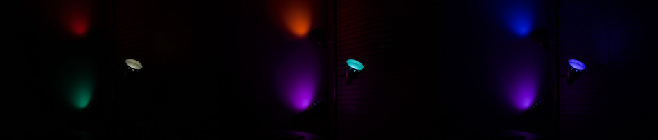

Bardolph is intended for people like me: someone who wants to experiment with their lights and perhaps use the results in a practical setting. Although I may use it as core technology for some other project, this was never intended to be a substitute for a commercial-grade, standalone product. There are plenty of full solutions out there for controlling not only lights, but just about everything else in the house. This is just something to have fun with and perhaps to make your living room look cool.
The scripting language came out of my experimenting with a set of four LIFX light bulbs. Although the lights support a richer API, before long I decided that for my purposes, controlling a light was a matter of sending 5 numbers to it. Through a very simple process, I could specify just about any color I wanted, at the brightness I preferred. Given a light’s current color, I could choose a destination color and a time, and watch that light smoothly transition to its new color, as if by magic.
Before long, I decided I wanted to be able to easily edit a sequence of desired states for the lights. A program would traverse that list and transmit each set of controlling parameters to the lights. To do so, I wrote a minimal Python program, relying on the LifxLAN library to make the code for accessing the lights very logical and straightforward.
Here are some examples of color combinations used on my three-light pole.
In each of these instances, the hues of the three bulbs are separated by a constant. None of the colors is specified explicitly; they are calculated at run-time with simple arithmetic relationships.
Originally, I started with a basic list, containing hue, saturation, brightness, and kelvin settings in sub-lists. All of the numbers are unsigned, 16-bit integers, which makes them easy to work with. In Python, it looked something like:
It's easy to see how this might become unwieldy.
Before long, I decided a simple language would make it easier to continue experimenting. Because I just wanted to supply four color parameters it seemed to make sense to use a simple name-value scheme. For example:
The parser for this grammar was very easy to implement, and before long, I added time and duration values.
The next step was to apply the settings to one or more lights. Because each light has a name which is a simple string, I added a set command to the language. For example, if one of your lights is named "Floor Lamp", to set it to a certain color, you could have:
A problem with these numbers is that they’re tied to the LIFX API, not to any real-world coordinate system for the color space.
Therefore, I introduced the concept of *logical units*. That system expresses the hue as an angle, measured in degrees. Saturation and brightness are treated as percentages. The value for kelvin is always expressed as a temperature in degrees Kelvin, although I really don’t understand what the lights do with that number. Duration and timing are both expressed in seconds.
Conveniently, these numbers correspond to those you see on the LIFX mobile app. This means you can use that app to experiment with the light, and see beforehand what effect the numeric parameters in a script will produce. Using logical units, this is equivalent to the above code:In practice, I discovered that in most cases, few of the settings participated in any given transition. Often, the brightness and saturation remain fixed. Treating the settings as persistent values can greatly simplify the code. This might lead to something such as:
Because the 75% brightness and 50% saturation get re-used, the lights change only their tone, while maintaining the same intensity and vividness.
I started this project shortly after completing an introductory Lighting Design class at City College of San Francisco. In that class, we learned that lighting for a live event consists of a series of states, where at any point in time, each light is assigned a brightness and possibly a color. As a play or other kind of live performance progresses, the person controlling the lights triggers cues, each of which was mapped to a new set of states for some or all of the lights.
Most often, a cue makes subtle changes to a subset of the lights, executing them gradually. For example, when Romeo stands below Juliet’s balcony, you might see the lights brighten on the two characters, while the rest of the stage gets very dark, perhaps taking 15 seconds to do so. The slowness of the transition prevents the audience from being distracted by the changing light, focusing instead on the acting.
I discovered that slow, imperceptible changes work nicely with ambient lighting in my living room. Specifically, my vertical pole in the corner holds three lights. For much of the time, it supplies a warmish-neutral tone to help fill the room with ambient lights. But later at night, the lights on that pole serve mostly as background. Their colors and intensity influence the feeling of the room, although most of the room’s ambient light comes from other brighter, more neutral sources.
In the background, the lights on the pole continuously change their colors. They repeat a cycle where each of the three lights has a different hue, and those hues that are separated by a numeric constant. This produces nice color arrangements, where, for example, you might get three shades of green, with one verging on blue. Because the transitions are so slow, people in the room don’t notice them occurring.
To achieve this behavior, timing plays two roles: when to make the changes, and how long those changes should take. These are referred to as time and duration. The time of a cue determines when it should occur.
Duration refers to the amount of time a light should take to transition from one state to the next. For example, when turning lights on or off, a duration of about 1.5 seconds gives a pleasing effect of dimming them up or down, and is a much nicer experience than instantaneously turning them on or off. However, that duration can go much longer. For exmaple, to extend that duration to 10 minutes (600 seconds):
When a light takes this long to go from one state to the next, the transition is often so slow that it is difficult to see the change in real time. The experience somewhat resembles watching the hands on a clock, where you can’t see the hands moving, but after a while you do notice that the time has changed. That inperceptibility that makes the lighting unobtrusive and effective at the same time.
During several months of using this, I found that most of my favorite scripts ran indefinitely, in an infinite loop. To support that, I added a repeat construct. Out of that rose several other kinds of loops, each of them having a specific use case.
One interesting type of loop uses start and end points to control the iteration. In this kind of loop, the programmer knows a desired state for a light and specifies how many steps to take to reach that goal.
For example, suppose you want to start with the lights at 100% brightness and lower them to 50%. Assume also that you want to do it in 5 separate steps, with the brightness evenly divided along the way. The loop for this is:
In this case, the compiler interpolates the intermediate values, yielding brightnesses of 100, 87.5, 75, 62.5, and 50.
In most programming languages I’ve used, the loop structures are optimized to compute an end result, rather than interpolating intermediate states. Because of that, the above code gets a bit more complicated with a traditional loop structure. For example, one possible solution in Python:
Another special kind of loop focuses on hue settings. A *cycle* loop type allows a script to cleanly rotate through the entire 360° range of hues using a specified number of steps.
For example, consider a loop where the hue goes from 0 to 360, stepping throough 5 colors. In this case, the hue settings will be 0, 72, 144, 216, and 288. The code for this is:
Note that the increment in this case is 360 / 5 = 72. If that increment were again added, the hue would reach 360 and become zero. Instead, the loop starts at 0 again, and the script effectively continues the cycle.
That scenario, where the hue cycles infinitely with values between 0 and 360, can be coded with:
Because each repetition of the inner loop starts where the last one left off, the transition is seamless.
After a while, I had some scripts that I wanted to use every day. But because many of them were designed to run indefinitely, it wasn’t practical to use my laptop or phone to execute them. The obvious choice seemed to be a standalone server.
Because the code is quite simple, it can run on a very cheap computer. I started with a Raspberry Pi B3+, but eventually realized that a Zero would be enough. I use a Zero-W, powered by an old phone charger, running as a headless server in the corner of my bedroom. That’s how I control my lights 95% of the time.
In order to make remote invocation of a script as accessible as possible, I set up a web server to implement a 1:1 mapping between scripts and URL’s. This makes launching of a script a matter of typing an address into your browser. For example, if I have a script named “on_all.ls”, I access http://example/on_all to run that script.
This reduces the front-end UI to a list of scripts mapped to URL’s. That list appears with user-friendly names in a table that can be easily rendered on just about any reasonable web browser. In my own experience, I can control my lights from a laptop, iPad, phone, or TV, all of which have built-in web browsers. Scripts can be bound to bookmarks, allowing quick access to everyday actions, such as turning on all the lights.
The server runs entirely within the local WiFi network. This means that it is not accessible from a remote location. This is necessary to prevent unwanted outside control over one’s lights. Other systems are available to allow people to control their lights from a remote location.